PDF报告¶
With Studio, you can edit existing PDF reports (e.g., invoices, quotations, etc.) or create new ones.
默认布局¶
The default layout of reports is managed outside Studio. Go to , then, in the Companies section, click Configure Document Layout. Layout settings are company-specific but apply to all reports.
小技巧
You can see how the different settings affect the report layout in the report preview on the right, or download a sample invoice PDF by clicking Download PDF Preview.
Use the following settings:
Layout: Four layouts are available:
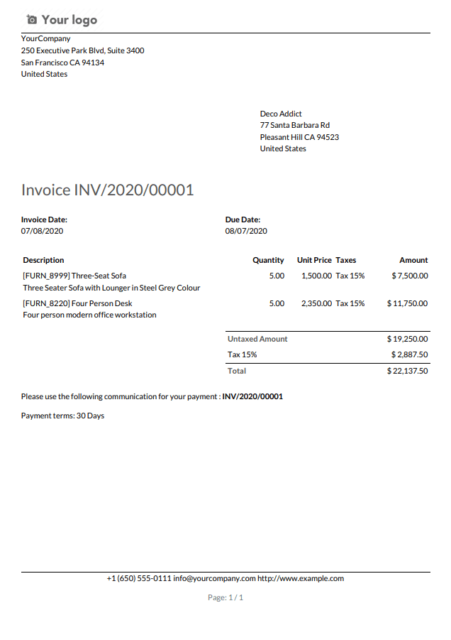 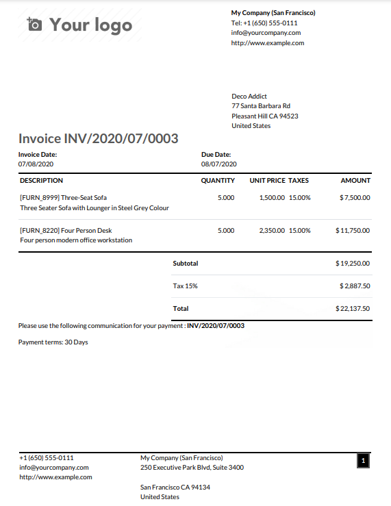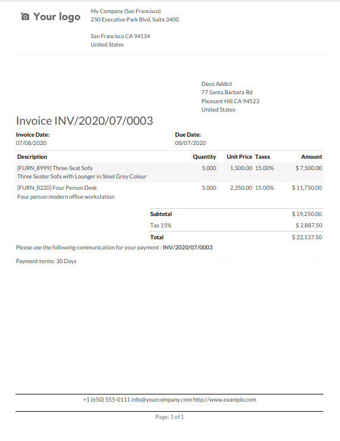
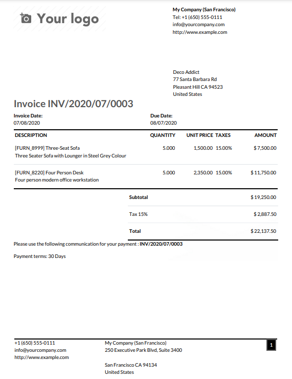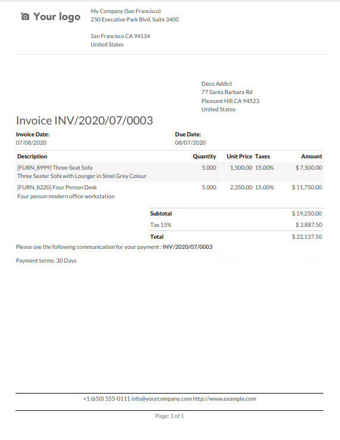
Font: Seven fonts are available: Lato, Roboto, Open Sans, Montserrat, Oswald, Raleway, and Tajawal (which supports Arabic and Latin scripts). Go to the Google Fonts website to preview them.
Company logo: Click the Edit button to upload or change the logo. This adds the logo to the company’s record on the Company model, which you can access by going to and then clicking Update Info in the Companies section.
Colors: Change the primary and secondary colors used to structure reports. The default colors are automatically generated based on the colors of the logo.
Layout background: The following backgrounds are available:
空白：不显示任何内容。
几何：背景显示几何图片。
Custom: upload a custom background image.
Company tagline: This is displayed in the header of external reports. You can add multiple lines of text.
Company details: These are displayed in the header of external reports. You can add multiple lines of text.
Paper format: to define the default paper size of reports. You can select A4 (21 cm x 29.7 cm), US Letter (21.59 cm x 27.54 cm), or QR codes page. This can also be defined for individual reports in the Paper format field in Studio.
Creating new PDF reports¶
To create a new report for a model, access the model, click the Toggle Studio button, then click Reports. Click New and, in the popup window that opens, select the type of report. This is solely used to determine what is displayed in the header and footer:
Once you have created the report, you can start editing it.
Editing PDF reports¶
To access the reports available for a model, access the model (e.g., sales orders), click the Toggle Studio button, then click Reports. Select an existing report to open it or create a new one.
小技巧
Alternatively, you can also open Studio, click Reports, and search for a specific report or model.
重要
It is strongly recommended to duplicate the standard report and perform changes in the duplicated version. To duplicate a report, hover the mouse pointer on the top right corner of the report, click the vertical ellipsis icon (⋮), and then select Duplicate.
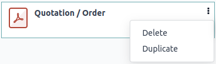选项¶
Once you’ve selected or created a report, you can use the options in the left part of the screen to:
Change the Report name. The new name is applied everywhere (in Studio, under the Print button, and in the PDF file name).
Modify the Paper format. If no value is selected, the format defined in the default layout is used.
Show in print menu: to add the report in the Print menu available from the record.
Reload from attachment: to save the report as an attachment on the record the first time it is generated and reload the original version of the report any subsequent time. This is legally required for invoices and is mainly used in this case.
Limit visibility to groups: to limit the availability of the PDF report to specific user groups.
Edit sources: to modify the report directly in the XML file.
Reset report: to discard all changes made to the report and reset it to its standard version.
Print preview: to generate and download a report preview.
Report editor¶
The report editor allows you to modify the formatting and contents of the report.
小技巧
You can Undo or Redo changes using the related buttons or the shortcuts
CTRL ZandCTRL Y.Changes are saved automatically when you leave the report or manually using the Save button.
You can reset the report to its standard version by clicking the Reset report button in the left part of the screen.
重要
Editing the header and footer of a report impacts all standard and custom reports.
Conditional blocks¶
The dashed rectangles represent conditional blocks (if/else statements). These are used to show/hide content based on specific conditions. Click on the block to view the conditions.
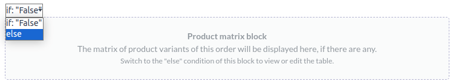Select a value to preview its corresponding output and edit it if necessary.
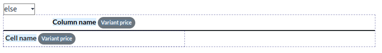注解
Conditions can only be edited in XML.
Other content¶
There are two types of text content in reports:
Static text, i.e., the text that’s not highlighted in blue, which can be modified directly in the editor.
Dynamic text, i.e., the text that’s highlighted in blue, which is replaced by field values when the report is generated, e.g., the SO number or the quotation date.
You can add content (e.g., fields, lists, tables, images, banners, etc.) to the report using
commands. Type / to open the powerbox, then type the command’s
name or select it from the list.
To add static text to the report, type the text where you want it.
For more advanced changes, you can edit the report in the XML directly.
Add a field¶
To add a field, type / and select the Field command. In the list that opens, select
or search for the field; click the right arrow next to the field name to access the list of related
fields if needed. Then, specify the default value and press Enter.
Add a data table¶
Data tables are used to display relational fields. To add
a data table, type /, select the Dynamic Table command, and select the relation to be
displayed in the table.
注解
Only relations of type one2many or many2many can be displayed as data tables.
Once the table has been added, you can add columns using the table tools. Position the cursor on top of the column, then click the purple rectangle and select an option.
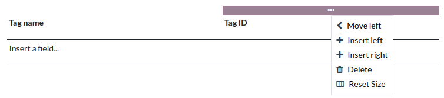You can then insert the field of your choice in the columns. The dialog box that opens shows the source object for the field (e.g., the Tag model) and the list of available fields.

注解
The default row automatically iterates over the field’s content, generating a row on the report for each field value (e.g., one row per tag). You can add static content rows above or below the generated rows using the table tools.
You can also add data tables by modifying the report’s XML.
格式化¶
To format text in the report, select it, then format it using the options in the knowledge/text-editor.
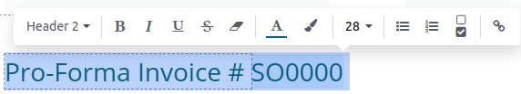
Editing the report’s XML¶
警告
Modifying the XML directly may result in report issues during upgrades. If this happens, simply copy your changes from the old database into your upgraded database.
To edit the report’s XML, click Edit sources in the left pane.
示例¶
Sometimes, tables are not properly recognized as such due to complex structures. In those cases, you can still modify them manually in the report XML. For example, with a sales order, you can find the following structure in the XML (simplified for documentation purposes):
<!-- table root element --> <table> <!-- thead = table header, the row with column titles --> <thead> <!-- table row element --> <tr> <!-- table header element --> <th>Name</th> <th>Price</th> </tr> </thead> <!-- table body, the main content --> <tbody> <!-- we create a row for each subrecord with t-foreach --> <tr t-foreach="record.some_relation_ids" t-as="line"> <!-- for each line, we output the name and price as table cells --> <td t-out="line.name"/> <td t-out="line.price"/> </tr> </tbody> </table>To modify a table, you must ensure that each row has the same number of data cells. For example, in the case above, you need to add a cell in the header section (with e.g., the column title) and another one in the body section with the field content (usually, with a
t-outort-fielddirective).<table> <!-- table root element --> <thead> <!-- thead = table header, the row with column titles --> <tr> <!-- table row element --> <th>Name</th> <!-- table header element --> <th>Price</th> <th>Category</th> </tr> </thead> <tbody> <!-- table body, the main content --> <tr t-foreach="record.some_relation_ids" t-as="line"> <!-- we create a row for each subrecord with t-foreach --> <td t-out="line.name"/> <!-- for each line, we output the name and price as table cells --> <td t-out="line.price"/> <td t-out="line.category_id.display_name"/> </tr> </tbody> </table>注解
Cells can span multiple rows or columns. For more information, go to the Mozilla Developer Network website.
For example, you can modify the Quotation/Order report to add a column to display the product category in the main table:
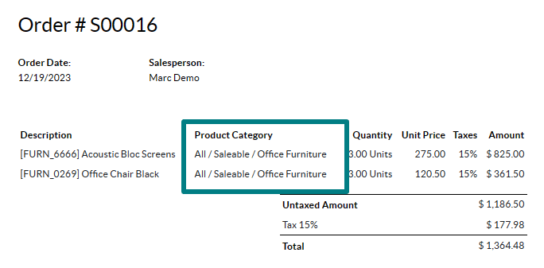<table class="table table-sm o_main_table table-borderless mt-4"> <!-- In case we want to repeat the header, remove "display: table-row-group" --> <thead style="display: table-row-group"> <tr> <th name="th_description" class="text-start">Description</th> <th>Product Category</th> <th name="th_quantity" class="text-end">Quantity</th> <th name="th_priceunit" class="text-end">Unit Price</th> [...] <tr t-att-class="'bg-200 fw-bold o_line_section' if line.display_type == 'line_section' else 'fst-italic o_line_note' if line.display_type == 'line_note' else ''"> <t t-if="not line.display_type"> <td name="td_name"><span t-field="line.name">Bacon Burger</span></td> <td t-out="line.product_id.categ_id.display_name"/> <td name="td_quantity" class="text-end"> <span t-field="line.product_uom_qty">3</span> <span t-field="line.product_uom">units</span> <span t-if="line.product_packaging_id">
To add a table in XML, you need to know the names of the fields and objects you wish to access and display. As an example, let’s add a table that details the tags on a sales order:
<!-- table root element -->
<table class="table">
<!-- thead = table header, the row with column titles -->
<thead>
<!-- table row element -->
<tr>
<!-- table header element -->
<th>ID</th>
<th>Name</th>
</tr>
</thead>
<!-- table body, the main content -->
<tbody>
<!-- we create a row for each subrecord with t-foreach -->
<tr t-foreach="doc.tag_ids" t-as="tag">
<!-- for each line, we output the name and price as table cells -->
<td t-out="tag.id"/>
<td t-out="tag.name"/>
</tr>
</tbody>
</table>
注解
When adding tables manually, style them using Bootstrap classes, like the table class included in the
example above.
If you want to show/hide content based on specific conditions, you can manually add if/else
control statements in the report XML.
For example, if you want to hide a custom data table if there are no tags, you can use the t-if
attribute to define the condition, which is then evaluated as True or False. The table will
not be displayed if there are no tags in the quotation.
<!-- table root element -->
<table class="table" t-if="len(doc.tag_ids) > 0">
<!-- thead = table header, the row with column titles -->
<thead>
<!-- table row element -->
<tr>
<!-- table header element -->
<th>ID</th>
<th>Name</th>
</tr>
</thead>
<!-- table body, the main content -->
<tbody>
<!-- we create a row for each subrecord with t-foreach -->
<tr t-foreach="doc.tag_ids" t-as="tag">
<!-- for each line, we output the name and price as table cells -->
<td t-out="tag.id"/>
<td t-out="tag.name"/>
</tr>
</tbody>
</table>
If you want to display another block in case the t-if statement is evaluated as False, you
can specify it using the t-else statement. The t-else block must directly follow the t-if
block in the document structure. There is no need to specify any condition in the t-else
attribute. As an example, let’s show a quick message explaining that there are no tags on the
quotation:
<!-- table root element -->
<table class="table" t-if="len(doc.tag_ids) > 0">
<!-- thead = table header, the row with column titles -->
<thead>
<!-- table row element -->
<tr>
<!-- table header element -->
<th>ID</th>
<th>Name</th>
</tr>
</thead>
<!-- table body, the main content -->
<tbody>
<!-- we create a row for each subrecord with t-foreach -->
<tr t-foreach="doc.tag_ids" t-as="tag">
<!-- for each line, we output the name and price as table cells -->
<td t-out="tag.id"/>
<td t-out="tag.name"/>
</tr>
</tbody>
</table>
<div class="text-muted" t-else="">No tag present on this document.</div>
By using the t-if/t-else notation, the report editor recognizes that these sections are
mutually exclusive and should be displayed as conditional blocks:
You can switch conditions using the editor to preview their output:
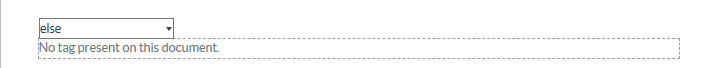If you wish to have multiple options, you can also use t-elif directives to add intermediary
conditions. For example, this is how the title of sales order reports changes based on the
condition of the underlying document.
<h2 class="mt-4">
<span t-if="env.context.get('proforma', False) or is_pro_forma">Pro-Forma Invoice # </span>
<span t-elif="doc.state in ['draft','sent']">Quotation # </span>
<span t-else="">Order # </span>
<span t-field="doc.name">SO0000</span>
</h2>
The title Pro-Forma Invoice is used depending on some contextual conditions. If these
conditions are not met and the state of the document is either draft or sent, then
Quotation is used. If none of those conditions are met, the report’s title is Order.
Working with images in a report can be challenging, as precise control over image size and
behavior is not always obvious. You can insert image fields using the report editor
(by using the /Field command), but inserting them in XML
using the t-field directive and accompanying t-options attributes provides better sizing and
positioning control.
For example, the following code outputs the field image_128 of the line’s product as a
64px-wide image (with an automatic height based on the image’s aspect ratio).
<span t-field="line.product_id.image_128" t-options-widget="image" t-options-width="64px"/>
The following options are available for image widgets:
width: width of the image, usually in pixels or CSS length units (e.g.,rem) (leave empty for auto-width).height: height of the image, usually in pixels or CSS length units (e.g.,rem) (leave empty for auto-height).class: CSS classes applied on theimgtag; Bootstrap classes are available.alt: alternative text of the imagestyle: style attribute; it allows you to override styles more freely than with Bootstrap classes.
These attributes must contain strings, i.e., text enclosed within quotes within quotes, e.g.,
t-options-width="'64px'" (or, alternatively, a valid Python expression).
注解
The image widget cannot be used on an img tag. Instead, set the t-field directive on a
span (for inline content) or div (for block content) node.
For example, let’s add a column with the product image in the quotation table:
<table class="table table-sm o_main_table table-borderless mt-4">
<thead style="display: table-row-group">
<tr>
<th>Image</th>
<th name="th_description" class="text-start">Description</th>
<th>Product Category</th>
<th name="th_quantity" class="text-end">Quantity</th>
<th name="th_priceunit" class="text-end">Unit Price</th>
[...]
<t t-foreach="lines_to_report" t-as="line">
<t t-set="current_subtotal" t-value="current_subtotal + line.price_subtotal"/>
<tr t-att-class="'bg-200 fw-bold o_line_section' if line.display_type == 'line_section' else 'fst-italic o_line_note' if line.display_type == 'line_note' else ''">
<t t-if="not line.display_type">
<td>
<span t-field="line.product_template_id.image_128"
t-options-widget="'image'"
t-options-width="'64px'"
t-options-class="'rounded-3 shadow img-thumbnail'"
/>
</td>
<td name="td_name"><span t-field="line.name">Bacon Burger</span></td>
<td t-out="line.product_id.categ_id.display_name"/>
The t-options-width attribute restricts the image width to 64 pixels, and the Bootstrap classes
used in t-options-class create a thumbnail-like border with rounded corners and a shadow.